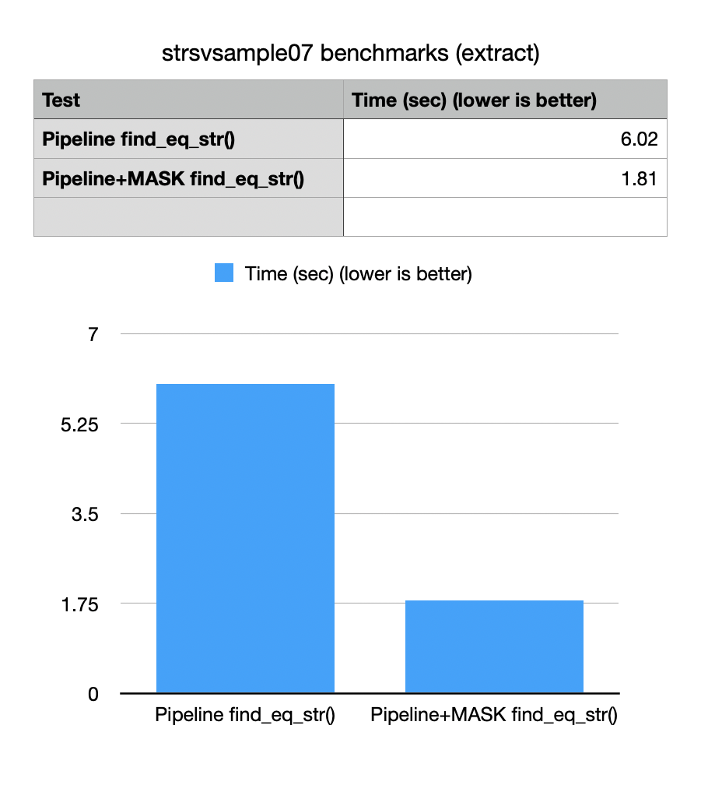

Version 7.9.3
Jan 06, 2022Release Notes
-
Improved
bm::sparse_vector_scanner<>::pipeline::set_search_mask()with ability to specify AND mask. Search mask is very useful optimization tool for cases when search can be limited/prunned by a prior knoweledge or a prior search on a more selective index. SQL example:Field1 = 10 AND Field2 IN ('value1', 'value2')One side of an SQL expressionField1 = 10as a bit-vector can now be fed into a pipeline index-free search scanner to potentially make search significantly faster. Example strsvsample07 updated to reflect new functionality.
-
bm::str_sparse_vector<>- fixed a few bugs related to processing of succinct vectors with NULL values. -
bm::str_sparse_vector<>::compare()- optimized comparison method taking two indexes of elements to perform comparison. - Optimizations for SSE2, SSE4.2 code for logical set subtraction (AND NOT).
-
Minor optimizations of
bm::aggregator<>- collection of algorithms for logical expression search. -
All succinct vectors: Implemented new API functions for bulk
set_null()andclear()of vector elements. New methods takebm::bvector<>as an input to set/clear marked elements. New operations are significantly faster than random access element assignments. Example:strsvsample04 -
All succinct vectors: New method
try_get()for conditional access to not NULL elements. New method is somewhat faster than separateis_null()/get()calls. Example:rscsample01 - Integer succinct vectors: optimizations of random element access (10% gain in some cases).
-
New example on how to use algorithms for bit-vector traversal:
bm::for_each_bit,bm::for_each_bit_range,bm::visit_each_bit,bm::visit_each_bit_range. bvsample25 - Minor optimizations for Rank-Select index construction and search.